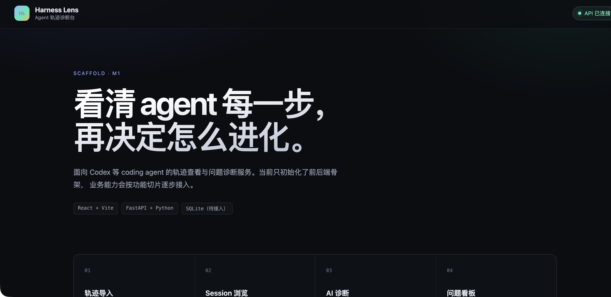
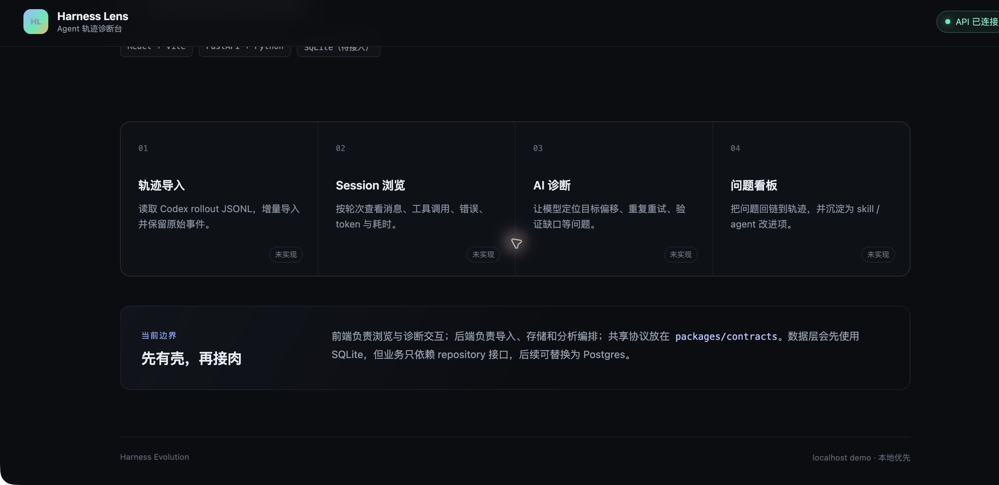
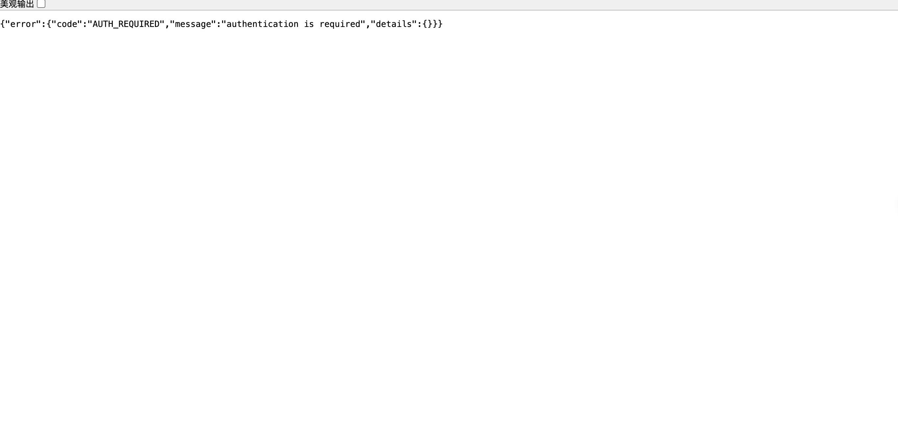

- Application
- Harness Evolution web + FastAPI
- Branch
- codex/m1-02-fastapi-scaffold
- Commit
- e90d54d99ebb5d81a91a5f8e2c6a140b8e354d0b
- Services
- FastAPI 8787 + Vite 5173, launched on the host
- Browser
- Google Chrome at desktop viewport
- Execution note
- The agent sandbox cannot bind loopback; equivalent host processes were used for the real browser run.
Computer Use · Integration Smoke
M1-02 FastAPI 骨架集成 Smoke
真实浏览器、Vite 代理和 FastAPI 服务联调通过：首页与四个计划模块正常渲染，health 连接态正确，受保护接口返回统一 401 错误壳。
7 / 7Scenarios passed
0Defects
3Screenshots
2 / 2Cross-stack tests
Environment and Artifact
2026-10-25 · macOS · Google Chrome · desktop viewportScenario Matrix
7 pass| # | 场景 | 结果 | 断言与证据 | 截图/命令 |
|---|---|---|---|---|
| 01 | 启动前后端真实进程 | PASS | FastAPI 在 8787、Vite 在 5173 监听；启动完成后没有进程错误。 | host lsof host launch |
| 02 | 首页正常渲染 | PASS | 页面标题为 Harness Lens，hero、技术栈和 main/footer 内容均出现在 accessibility tree。 | 01-home-safe.jpeg |
| 03 | 四个计划模块完整可见 | PASS | 轨迹导入、Session 浏览、AI 诊断、问题看板四卡均渲染，架构说明与 footer 可见。 | 02-modules-safe.jpeg |
| 04 | 真实 health 驱动连接态 | PASS | 页面状态为“API 已连接”，而不是 loading 或 failure。 | 01-home-safe.jpeg accessibility tree |
| 05 | 桌面布局无明显溢出 | PASS | 桌面视口下 header、hero、四列卡片与架构说明无重叠、裁切或横向溢出；长页面滚动正常。 | 01-home-safe.jpeg 02-modules-safe.jpeg |
| 06 | Vite 代理 health 契约 | PASS | GET http://localhost:5173/api/health → 200；body={ok:true,service:'harness-evolution',phase:'scaffold'}。 | host curl |
| 07 | 受保护接口统一 401 | PASS | GET http://localhost:5173/api/sessions → 401；body={error:{code:'AUTH_REQUIRED',message:'authentication is required',details:{}}}。 | 03-protected-401-safe.jpeg host curl |
Issues and Observations
No defects foundNo defects were found.
Evidence
3 screenshots


Automated Coverage Assessment
4 areas reviewed| 范围 | 实测覆盖率 | 结果 | 备注 |
|---|---|---|---|
| 前端单元测试 + V8 coverage | 97.21% statements / 83.90% branches / 100% functions / 97.21% lines | 27 passed，1 个既有 skip；四项均高于 80% 阈值 | pnpm test 实测通过 |
| FastAPI 单元与路由测试 | 92% | 14 passed；高于 80% 要求 | pnpm test:api 实测通过 |
| 跨栈集成测试 | 2 scenarios | health 200 与 protected 401 均通过真实 Vite→FastAPI 链路 | pnpm test:integration 实测通过 |
| Computer Use 人工 smoke | 7 scenarios | 渲染、连接态、模块列表、布局和错误壳均有实测证据 | 本报告 |
Conclusion
READYM1-02 前后端骨架在真实浏览器和代理链路中通过集成 smoke，未发现产品缺陷。
- 前后端单元、跨栈集成与 80% 覆盖率门禁均已实测通过。
- 本次 smoke 的临时启动进程已停止，临时候选启动器已删除。
- 后续业务页面仍按 M1 后续 issue 接入；本报告不把占位模块当作已实现能力。
Harness Evolution · Computer Use smoke evidence · 2026-10-25